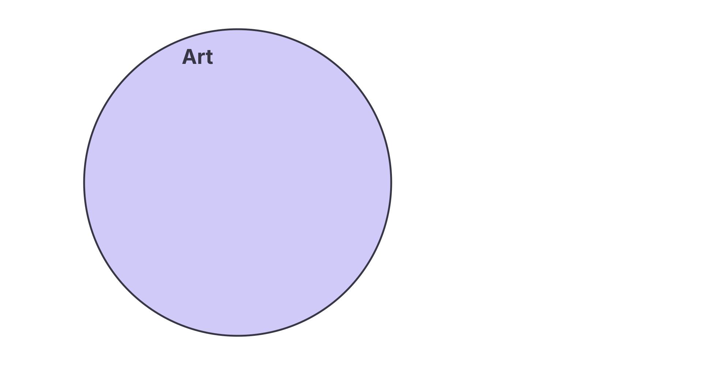
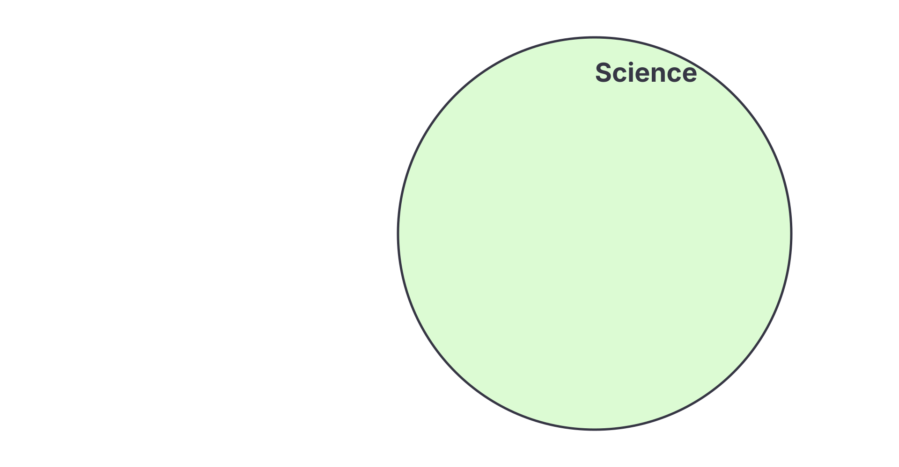
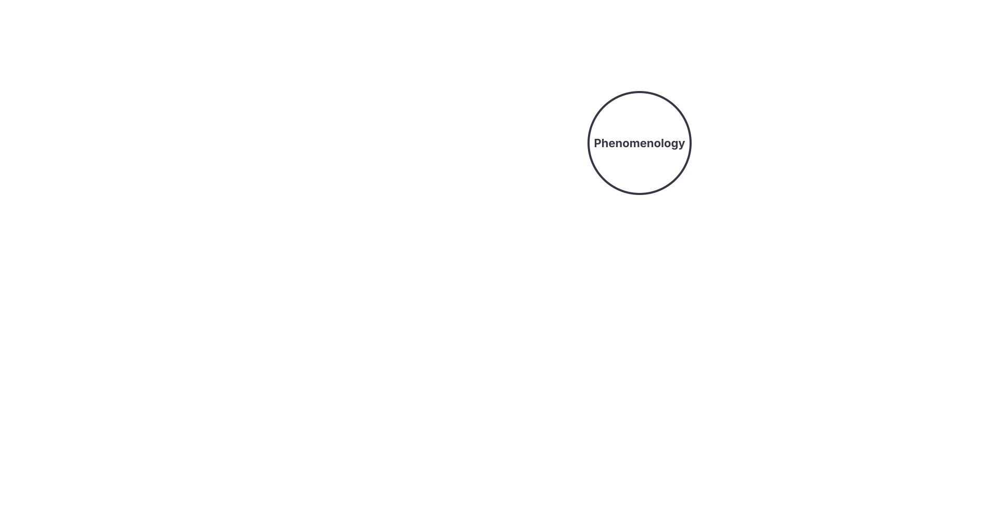
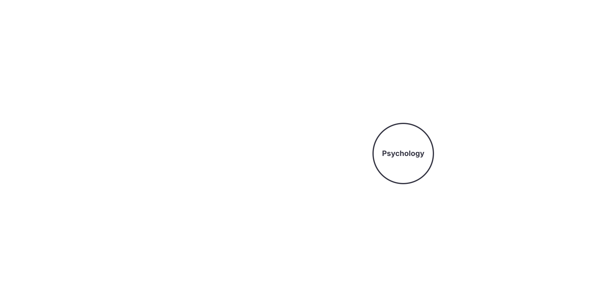
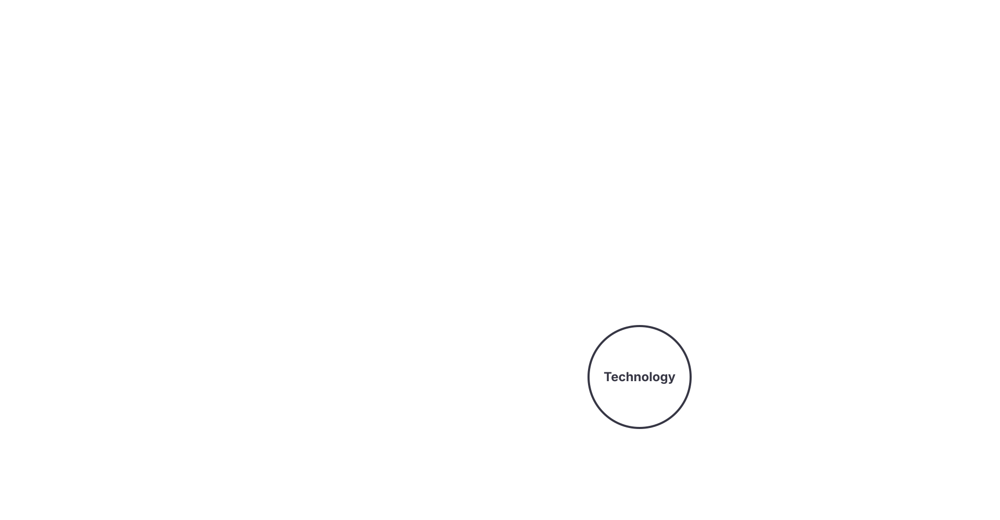
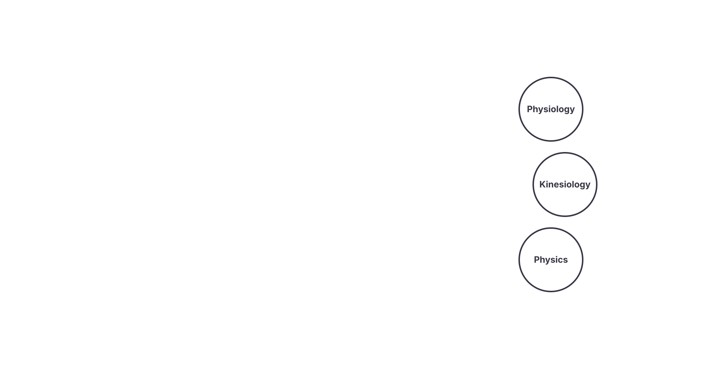
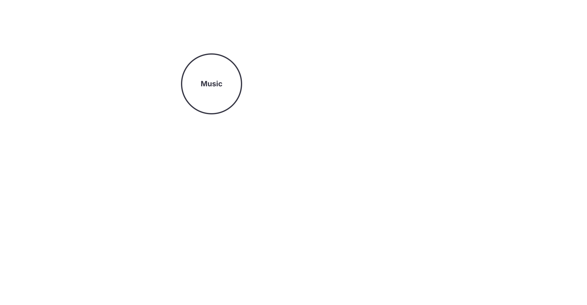
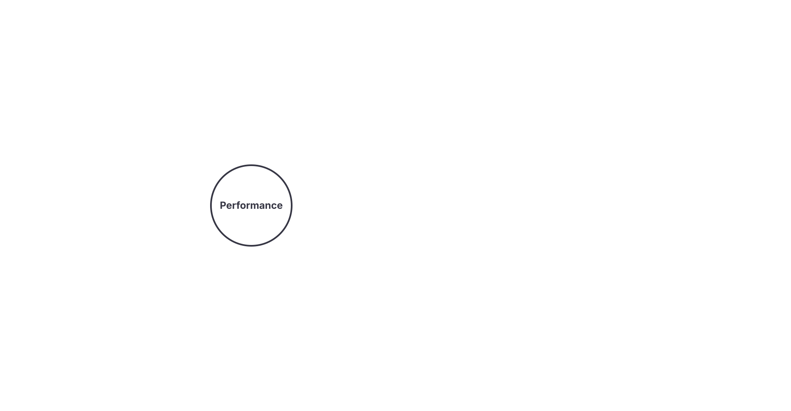
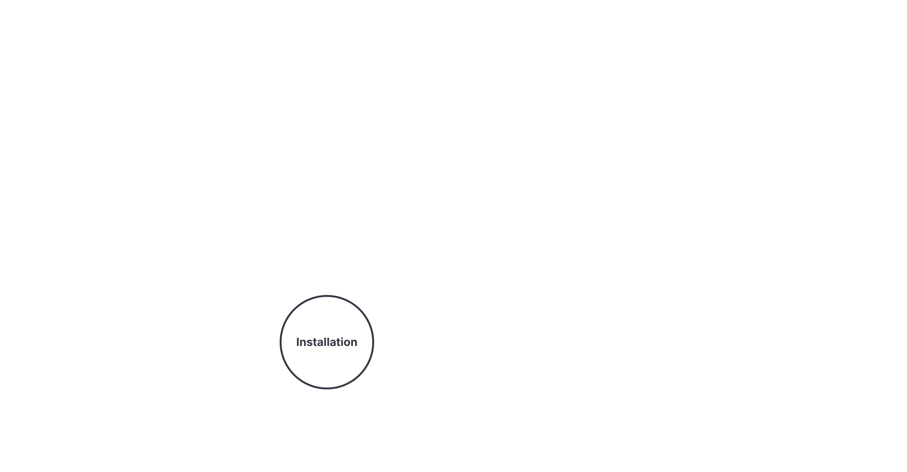
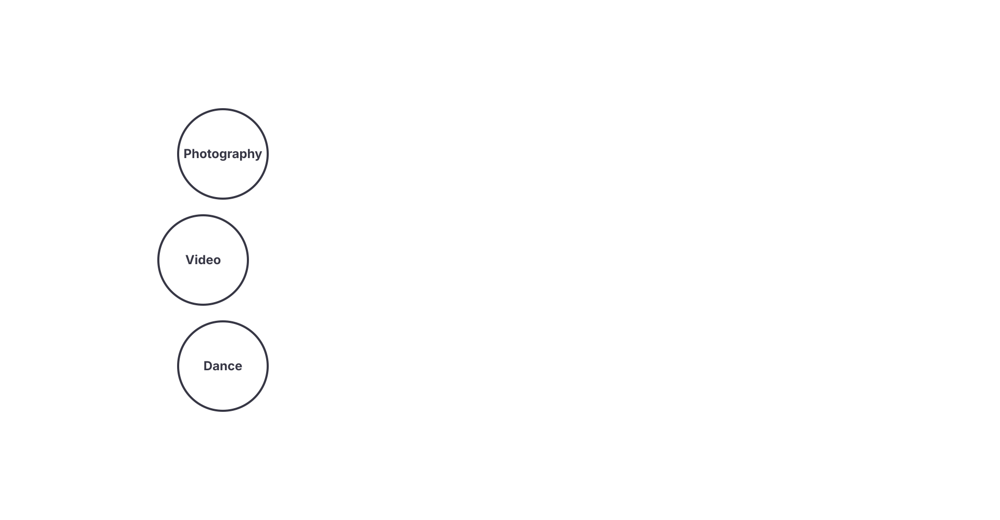
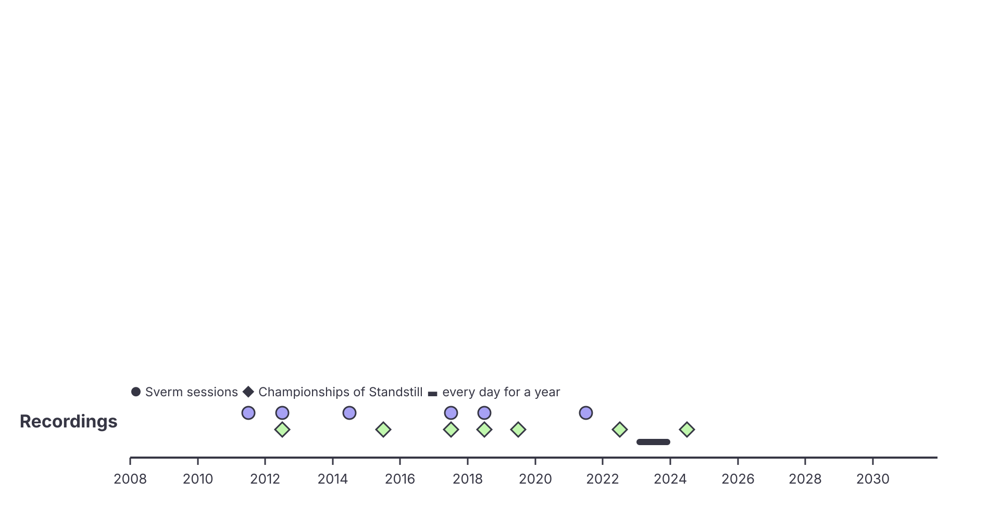
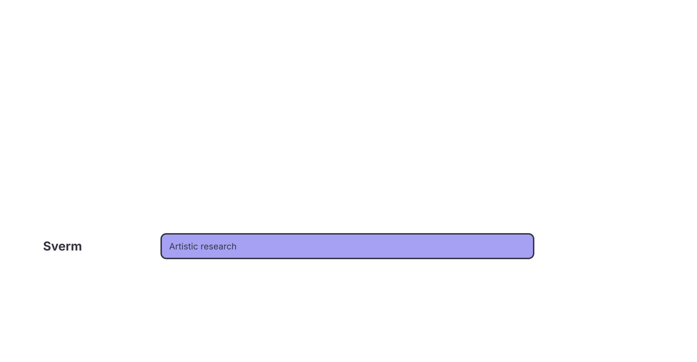
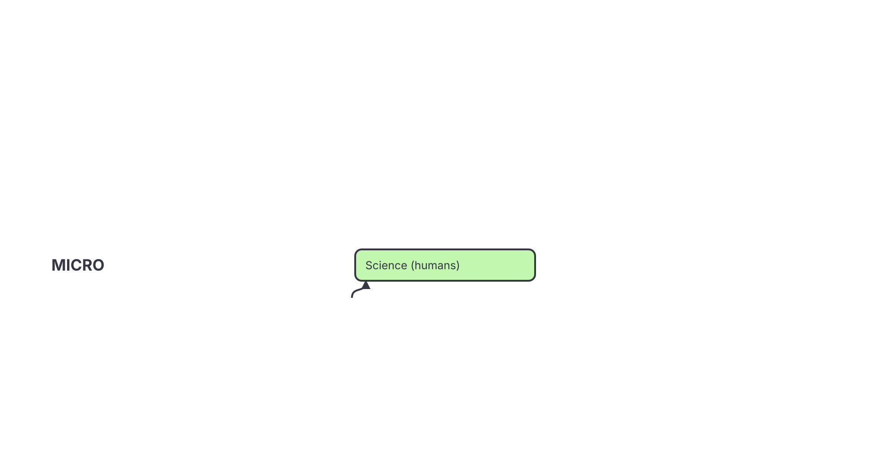
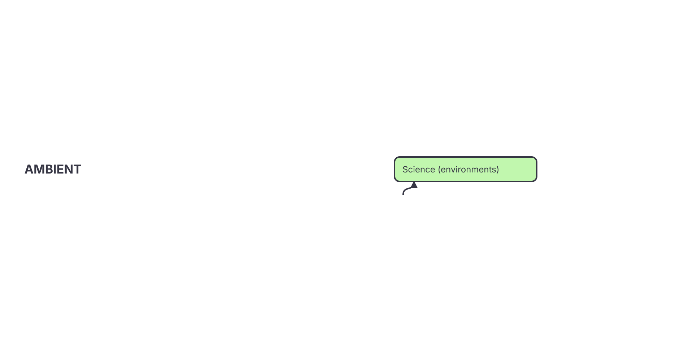
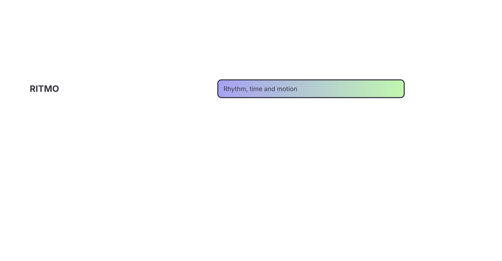
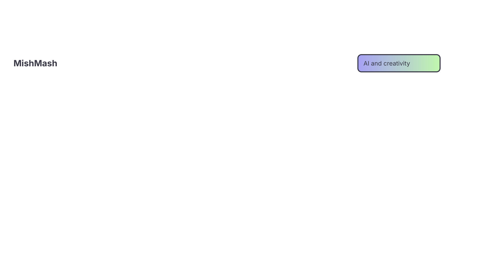
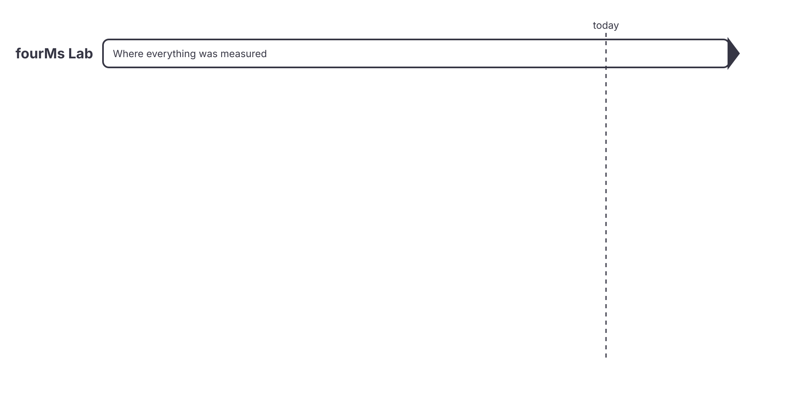
Still Standing
The Art and Science of Human Micromotion and Bodily Rhythms
Cambridge University Press, forthcoming, open access
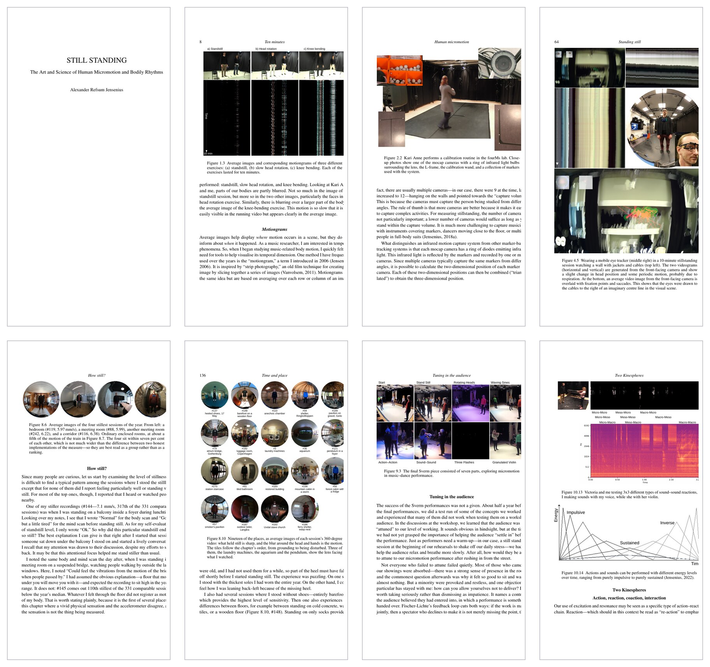


Norwegian Championship of Standstill · 2015
Why vertical?

Bass, the vestibular system, or a knee that wants to bounce?
Cameron et al. 2022

Zelechowska et al. 2020a

StillStanding365 · ten minutes under a wasps' nest
 Body time · StillStanding365 · the year 2023
Body time · StillStanding365 · the year 2023
 Sverm · 2012
Sverm · 2012
"Was that really ten minutes?"
Jensenius 2023
Sverm
With a task in mind, time passed faster
Sverm · how we worked with time and space
Sverm · states and events
Sverm diaries and my own year · abstract, not measured
How much do we move?
mm/s
Made of what?
Sway, breath, heartbeat
Does music move us?
A little: %
On the beat?
No
What matters more?
The task: × when dancing
Who moves more?
No trait predicts it
In sync together?
No, but in order
How long is ten minutes?
Depends on the clock
Data
Kari Anne Vadstensvik Bjerkestrand
Victoria Johnson
Lisa Dillan
Maja Roel
Elisabeth Kjeldahl Nilsson
Agata Zelechowska
Victor Gonzalez-Sanchez
Maham Riaz
Jinyue (Arthur) Guo
Bilge Serdar
Fadi Al-Ghawanmeh
Mari Lesteberg
Dana Swarbrick
Simon Høffding
Finn Upham
Laura Bishop
Ragnhild Torvanger Solberg
Kristian Nymoen
Ståle A. Skogstad
Arve Voldsund
Mari Romarheim Haugen
Kayla Burnim
Ximena Alarcón
Charles P. Martin
Bruno Laeng
Jonna Vuoskoski
Rolf Inge Godøy
Tor Halmrast
Diana Kayser
Anders Tveit
Minho Song
Andreas Bergsland
Anne Danielsen
Rainer Polak
Kyrre Glette
Shabari Rao
Claude

Cursor

GitHub Copilot

Gemini
and close to 1000 participants